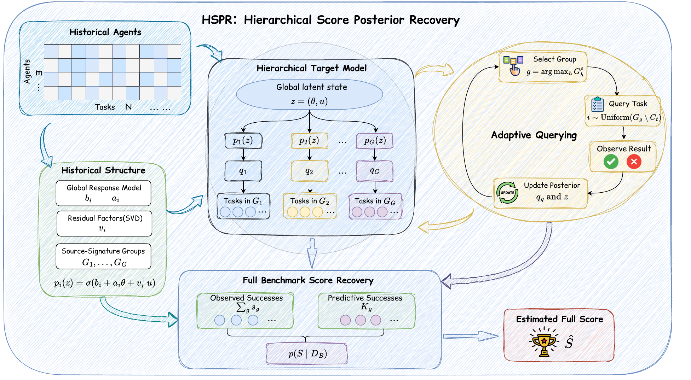
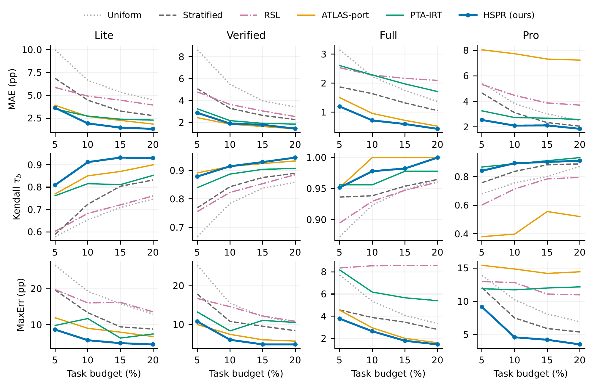

学习历史结构Learn historical structure
拟合整体响应因素，并将历史成绩完全相同的题分组。组内题共享一个带有不确定性的成功率。Fit response factors and group tasks with identical source-response signatures. Tasks in each group share an uncertain success rate.
arXiv · 2026
少跑一些题，估计整个测试集的得分。Fewer task executions. An estimate of the whole benchmark.
从历史 Agent 的成绩中学习题目之间的联系。每观察一个新结果，就更新判断、选择下一题，逐步恢复新 Agent 的完整得分。Learn task relationships from historical agents. Update uncertainty after each observed outcome, choose the next task, and recover the new agent’s full-benchmark score.
¹ Soochow University ² Singapore Management University
† 通讯作者† Corresponding author
问题与方法The problem & the method
题目的难度和相关性各不相同，少量题的平均成绩可能偏离完整测试集。历史成绩提供线索：哪些题具有相近的响应模式，以及这些模式对新 Agent 还有多大不确定性。Tasks differ in difficulty and dependence, so a small subset’s average can miss the full score. Historical responses reveal shared patterns; HSPR also models uncertainty about how those patterns transfer to a new agent.
拟合整体响应因素，并将历史成绩完全相同的题分组。组内题共享一个带有不确定性的成功率。Fit response factors and group tasks with identical source-response signatures. Tasks in each group share an uncertain success rate.
观察已选题的结果，更新 Agent 的潜在状态和各组成功率，再决定下一道题。选题与校准设置在 Source 上确定。Observed outcomes update the agent’s latent state and group rates, guiding the next query. Source validation determines acquisition settings and calibration.
将已观察到的成功数与未运行题目的预测成功数结合，得到完整得分的分布，并输出经过校准的预测中位数。Combine observed successes with predictive success counts for unqueried tasks. Return a source-calibrated median of the full-score posterior.

论文报告结果Results reported in the paper
在 10% 题目预算下，HSPR 的平均绝对误差在四个题库中的三个上最低，最大绝对误差在四个上均最低。Verified 上，ATLAS-port 的平均误差略低。这里比较的是论文中所列方法的点估计。At a 10% task budget, HSPR has the lowest MAE on three banks and the lowest MaxErr on all four among the compared methods. ATLAS-port has slightly lower MAE on Verified. These are point-estimate comparisons.

| 方法Method | Lite 30 / 300 | Verified 50 / 500 | Full 229 / 2,294 | Pro 73 / 730 |
|---|---|---|---|---|
| Uniform raw | 6.632 | 5.482 | 2.227 | 3.832 |
| Stratified | 4.468 | 3.302 | 1.636 | 3.111 |
| RSL | 4.911 | 3.654 | 2.277 | 4.467 |
| FAQ-port | 6.681 | 4.951 | 1.807 | 5.433 |
| Mid-Range | 18.448 | 16.449 | 24.709 | 22.798 |
| Mid-Range + Ridge 内部对照control | 4.717 | 3.653 | 1.532 | 3.434 |
| ATLAS-port | 2.689 | 1.861 | 0.957 | 7.736 |
| PTA-IRT | 2.724 | 2.177 | 2.280 | 2.731 |
| HSPR | 1.927 | 1.915 | 0.717 | 2.098 |
数值来自论文表 1；列标题为查询数 / 总题数，加粗表示该列最低的点估计。FAQ-port、ATLAS-port 保留论文披露的适配范围。完整的 MaxErr、排名指标和统计检验见论文。Values from paper Table 1. Headers show queried / total tasks; bold marks column-best point estimates. FAQ-port and ATLAS-port retain the adaptations disclosed in the paper. See the paper for MaxErr, rank metrics, and statistical tests. 完整结果 ↗Full results ↗
数据与复现Data & reproduction
公开矩阵中的每一行对应一个 Agent 配置，每一列对应一道题；1 为成功，0 为失败。实验从选中位置逐个读取结果，估计完整行的平均成绩。完整 Target 行在估计结束后用于计算误差，因此复现这一过程无需新的 LLM 调用。
四个题库分别包含 35、70、14、14 个 Agent 配置，使用四折配置级划分。每折 Source 与 Target 配置互不重叠；基础模型或相关 Agent 框架可能共享。HSPR 的模型、选题和校准设置在 Source 上确定，Target 查询使用种子 0–4。主成本单位为不同题目的查询次数。
Each row of the public matrix is an agent configuration, each column a task: 1 means success and 0 failure. Queries reveal selected entries sequentially to estimate the complete row’s mean. The full target row is used afterward to measure error. This replay runs without new LLM calls.
The four banks contain 35, 70, 14, and 14 agent configurations, with four configuration-level folds. Source and target configurations are disjoint within a fold; base models or related scaffolds may be shared. Model settings, acquisition, and calibration are source-selected; HSPR target queries use seeds 0–4. Budgets count distinct queried tasks.
example.py 使用 8 个历史配置、12 道题的合成数据。观察 4 道题后，输出估计分数 41.7%；完整行的实际分数为 58.3%。这个例子演示数据如何进入估计器；论文的效果来自上面的真实题库实验。example.py uses a synthetic matrix with 8 historical configurations and 12 tasks. Four queries yield an estimate of 41.7%; the complete target row scores 58.3%. This example illustrates the API. The real-bank experiments above provide the performance evidence.
python example.py
Synthetic example
Queried task indices: [2, 10, 11, 6]
Estimated full score: 41.7%git clone https://github.com/wanyichen06/HSPR.git
cd HSPR
python -m venv .venv
source .venv/bin/activate
pip install -r requirements.txt
python example.py
python smoke_test.pyPython 3.11，NumPy 与 SciPy。真实题库使用 PTA-IRT 的公开数据；README 提供固定数据版本、下载入口和完整运行命令。代码包含核心实现、Source 选参和 16 组论文配置。历史预测和拟合参数快照未随代码发布。Python 3.11, NumPy, and SciPy. The paper banks use PTA-IRT public data; the README links the pinned version and full evaluation commands. The release includes the method, source selection, and 16 paper configurations. Fitted snapshots, raw data, and historical predictions are omitted.
引用Citation
@article{chen2026hspr,
title={HSPR: Recovering Software-Agent Benchmark Scores via Hierarchical Posterior Inference},
author={Chen, Wanyi and Shen, Wanqin and Shi, Yuanchen and Sun, Zhensu and Kong, Fang},
journal={arXiv preprint arXiv:2610.24611},
year={2026},
doi={10.48550/arXiv.2610.24611},
url={https://arxiv.org/abs/2610.24611}
}